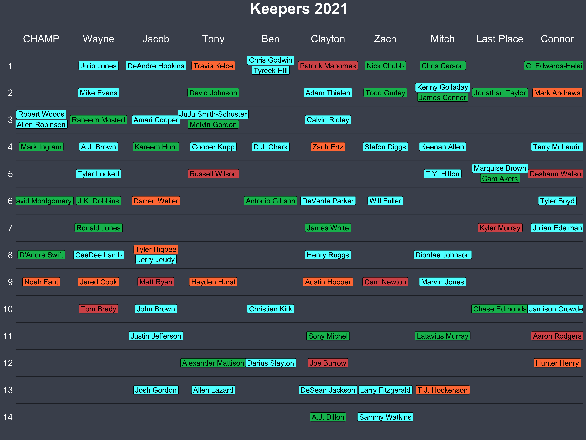

Working with {ffscrapr}
My previous post dove in on sample analysis of our fantasy football league utilizing the API from Sleeper. Since then, I have discovered an amazing package {ffscrapr} on CRAN, developed by Tan. This package does everything for you to get data from Sleeper into easy to work with data frames.
The Goal
Each year we draft players for the upcoming season, which is typically referred to as redraft format. A couple years ago we began a keeper format where we can keep a player from the previous year.
There are several ways to implement a keeper format, our rules are as follows:
- Keep 1 player, that player can not be kept consecutive years
- The kept player will be kept at the round they were drafted in with a single round penalty (i.e. if you drafted a player in round 10, you would keep them in round 9 the following year)
- If you trade a player, the new team gets the rights to keep that player
- The player must remain on the roster at least until the week before their respective bye week
As you can imagine, this is a nightmare to track in a spreadsheet as a commissioner.
The Solution
Only a few packages needed (if you count {tidyverse} as a few that is) to begin the analysis.
── Attaching core tidyverse packages ──────────────────────── tidyverse 2.0.0 ──
✔ dplyr 1.1.2 ✔ readr 2.1.4
✔ forcats 1.0.0 ✔ stringr 1.5.0
✔ ggplot2 3.4.2 ✔ tibble 3.2.1
✔ lubridate 1.9.2 ✔ tidyr 1.3.0
✔ purrr 1.0.1
── Conflicts ────────────────────────────────────────── tidyverse_conflicts() ──
✖ dplyr::filter() masks stats::filter()
✖ dplyr::lag() masks stats::lag()
ℹ Use the conflicted package (<http://conflicted.r-lib.org/>) to force all conflicts to become errorsffscrapr
Tan has well documented how the package works through the {ffscraper} website. I won’t go into too much detail, as the API is fairly simple to understand from the function names alone. Basically, create a league object and get the draft picks and transactions for it.
The league I will be focusing on is a leauge is called The Hot Boyz… Hopefully Dallas Cowboys fans understand!
my_leagues <- ffscrapr::sleeper_userleagues("rplain", 2020)
league_id <- my_leagues %>%
filter(league_name == 'The Hot Boyz') %>%
pull(league_id)
my_league <- ffscrapr::ff_connect(platform = 'sleeper',
season = 2020,
league_id = league_id)
transactions <- ff_transactions(my_league)
draft_picks <- ff_draft(my_league) Below is what the draft board looked like following the draft.
draft_picks %>%
select(round, pick, franchise_name, player_name, pos, team) %>%
mutate(player_name = ifelse(is.na(player_name), paste(team, " Def"), player_name)) %>%
pivot_wider(
id_cols = round,
names_from = franchise_name,
values_from = player_name
) %>%
`colnames<-`(c("Round",1:10)) %>%
gt::gt()| Round | 1 | 2 | 3 | 4 | 5 | 6 | 7 | 8 | 9 | 10 |
|---|---|---|---|---|---|---|---|---|---|---|
| 1 | Christian McCaffrey | Ezekiel Elliott | Saquon Barkley | Michael Thomas | Dalvin Cook | Alvin Kamara | Le'Veon Bell | Joe Mixon | Miles Sanders | Davante Adams |
| 2 | Chris Godwin | Josh Jacobs | DeAndre Hopkins | Travis Kelce | Tyreek Hill | Patrick Mahomes | Nick Chubb | Chris Carson | Julio Jones | Clyde Edwards-Helaire |
| 3 | James Conner | Mike Evans | Austin Ekeler | David Johnson | George Kittle | Adam Thielen | Todd Gurley | Kenny Golladay | Jonathan Taylor | Mark Andrews |
| 4 | Robert Woods | JuJu Smith-Schuster | Amari Cooper | Aaron Jones | Melvin Gordon | Calvin Ridley | Raheem Mostert | Allen Robinson | Odell Beckham | Derrick Henry |
| 5 | Mark Ingram | A.J. Brown | Kareem Hunt | Cooper Kupp | D.J. Chark | Zach Ertz | Stefon Diggs | Keenan Allen | D.J. Moore | Terry McLaurin |
| 6 | Michael Gallup | Marquise Brown | Devin Singletary | Russell Wilson | Dak Prescott | Kenyan Drake | Tyler Lockett | T.Y. Hilton | Cam Akers | Deshaun Watson |
| 7 | Antonio Gibson | J.K. Dobbins | Darren Waller | David Montgomery | Leonard Fournette | DeVante Parker | Will Fuller | Marlon Mack | Zack Moss | Tyler Boyd |
| 8 | Brandin Cooks | Ronald Jones | A.J. Green | Scott Miller | SF Def | James White | Rob Gronkowski | Evan Engram | Kyler Murray | Julian Edelman |
| 9 | Lamar Jackson | CeeDee Lamb | Jerry Jeudy | Jordan Howard | Diontae Johnson | Henry Ruggs | Tyler Higbee | D'Andre Swift | Deebo Samuel | Jarvis Landry |
| 10 | Noah Fant | Jared Cook | Matt Ryan | Hayden Hurst | Emmanuel Sanders | Austin Hooper | Cam Newton | Marvin Jones | Tarik Cohen | Matt Breida |
| 11 | PIT Def | Tom Brady | John Brown | Phillip Lindsay | Christian Kirk | BAL Def | NE Def | Chris Thompson | Chase Edmonds | Jamison Crowder |
| 12 | Tony Pollard | Kerryon Johnson | Justin Jefferson | BUF Def | Tevin Coleman | Sony Michel | Sterling Shepard | Latavius Murray | Damien Harris | Aaron Rodgers |
| 13 | Anthony Miller | Mecole Hardman | Blake Jarwin | Alexander Mattison | Darius Slayton | Joe Burrow | Courtland Sutton | Josh Allen | Preston Williams | Hunter Henry |
| 14 | Golden Tate | O.J. Howard | Josh Gordon | Allen Lazard | T.J. Hockenson | DeSean Jackson | Larry Fitzgerald | Bryan Edwards | Christopher Herndon | TEN Def |
| 15 | Devonta Freeman | LAC Def | MIN Def | Ryquell Armstead | DK Metcalf | A.J. Dillon | Sammy Watkins | IND Def | Parris Campbell | Mike Gesicki |
This was the initial draft board. My team was the 9th slot. I traded away Julio Jones and cut Odell Beckham Jr. after he went to Injured Reserve. There needs to be a logic to represent these moves, as they are no longer eligible to keep.
In addition to structuring the rules, I would like to:
- Provide color the names by each player’s position, as is typical on most fantasy football draft boards.
- Allow multiple players to occupy a draft slot. In the case of a traded player, there can be overlap on eligible keepers for one team in a particular round .
These can not be done with a pivot table (at least not without hardcoding elements). The final output will need to be in a tidy format to allow usage of the grammar of graphics in {ggplot2}.
Ineligible Keepers
To start with, create a list of the players kept from 2019 in 2020. The players are no longer eligible and need to be filtered out.
The NFL and fantasy football is played weekly. Using the {lubridate}, create week 1 of the NFL season from the timestamp field in the transactions data frame.
To get the players that were dropped early in advance of their bye week:
- Filter for transactions that successfully dropped players
- Add in each teams bye week
- Get the earliest drop (each player can be added/dropped multiple times throughout the season)
- Subset as a list of unique names
kept_players <- c(
'Lamar Jackson',
'Josh Jacobs',
'Austin Ekeler',
'Aaron Jones',
'DK Metcalf',
'Kenyan Drake',
'Courtland Sutton',
'Josh Allen',
'D.J. Moore',
'Derrick Henry'
)
transactions <- transactions %>%
mutate(week = lubridate::week(timestamp) - 36)
dropped_players <- transactions %>%
filter(type_desc == 'dropped') %>%
filter(type != 'waiver_failed') %>%
mutate(
bye_weeks = case_when(
team %in% c("PIT", "TEN") ~ 4,
team %in% c("DEN", "DET", "GB", "NE") ~ 5,
team %in% c("LV", "LAC", "NO", "SEA") ~ 6,
team %in% c("BAL", "IND", "MIA", "MIN") ~ 7,
team %in% c("ARI", "HOU", "JAX", "WAS") ~ 8,
team %in% c("CIN", "CLE", "LAR", "PHI") ~ 9,
team %in% c("ATL", "DAL", "KC", "NYJ") ~ 10,
team %in% c("BUF", "CHI", "NYG", "SF") ~ 11,
team %in% c("CAR", "TB") ~ 13
)
) %>%
group_by(player_name, player_id) %>%
arrange(timestamp, player_id) %>%
mutate(rn = row_number()) %>%
filter(rn == 1) %>%
filter(week < bye_weeks - 1) %>%
#filter(franchise_id == 1) %>% print(n= 32)
pull(player_name) %>%
unique()Traded Players
{ffscrapr} does so much of the leg work for you. In the transactions of the trade, a field trade_partner is already included which contains the ID of who the trade went to.
Again, follow a similar logic to most recent occurrence of the traded player. For example, Michael Gallup was traded 3 times in our league. He needs to be placed on the final team he ended up on.
A separate table franchises was created to join the franchise_name to the output.
Finally, I created a list of the names in our league. If you didn’t see my previous work, you might notice the 9th spot did not turn out so well.
franchises <- draft_picks %>%
count(franchise_id, franchise_name, pick) %>%
select(-n)
trades <- transactions %>%
filter(type == 'trade') %>%
group_by(player_name) %>%
arrange(timestamp) %>%
mutate(rn = row_number()) %>%
filter(rn == max(rn)) %>%
select(franchise_id, franchise_name, player_name, trade_partner) %>%
mutate(trade_partner = as.numeric(trade_partner)) %>%
left_join(
franchises, by = c("trade_partner"="franchise_id"), suffix = c("","_trade")
)
users <- c(
'CHAMP',
'Wayne',
'Jacob',
'Tony',
'Ben',
'Clayton',
'Zach',
'Mitch',
'Last Place',
'Connor'
)The Plot
draft_picks %>%
filter(round != 1) %>%
mutate(round = round - 1) %>%
mutate(url = glue::glue(
"https://sleepercdn.com/content/nfl/players/thumb/{player_id}.jpg"
)) %>%
bind_rows(
tibble(
round = rep(0, 10),
player_name = users,
pick = 1:10
)
) %>%
filter(!player_name %in% dropped_players & !player_name %in% kept_players) %>%
left_join(
trades,
by = c("franchise_name", "player_name"),
suffix = c("", "_trade")
) %>%
mutate(pick = ifelse(
!is.na(pick_trade) & round != 0,
pick_trade,
pick
)) %>%
group_by(round, pick) %>%
mutate(hjust = n(),
hjust_n = row_number()) %>%
ungroup() %>%
mutate(player_name = case_when(
player_name == 'Clyde Edwards-Helaire'~'C. Edwards-Helaire',
TRUE ~ player_name
)) %>%
ggplot(aes(pick, round)) +
geom_point(alpha = 0) +
geom_label(
aes(label = player_name, fill = pos),
show.legend = F,
data = . %>% filter(round > 0, hjust > 1, hjust_n == 1),
vjust = 1,
size = 5
) +
geom_label(
aes(label = player_name, fill = pos),
size = 5,
show.legend = F,
data = . %>% filter(round > 0, hjust > 1, hjust_n == 2),
vjust = -0.1
) +
geom_label(
aes(label = player_name, fill = pos),
size = 5,
show.legend = F,
data = . %>% filter(round > 0, hjust == 1)
) +
geom_text(
aes(label = player_name),
data = . %>%
filter(round == 0),
size = 7,
color = "#FFFFFF"
) +
scale_y_reverse(breaks = c(1:15)) +
theme_minimal() +
labs(
title = "Keepers 2021",
x = NULL,
y = NULL
) +
theme(
panel.grid = element_blank(),
axis.text.x = element_blank(),
axis.text.y = element_text(color="#FFFFFF", size = 18),
plot.title = element_text(size = 30, face = "bold", hjust = 0.5, color = "#FFFFFF"),
plot.background = element_rect(fill = "#494f5c"),
) +
geom_hline(yintercept = 0.5) +
geom_hline(yintercept = seq(1.5, 13.5, 1), alpha = 0.5) +
scale_fill_manual(
values = c("#d65858","#00ba5d","#ff7c43", "#58ffff")
)I’ve included the code on how I created the plot, however I’ve cut a corner by not having the code evaluated at runtime, and the static image is passed through.
I still have a lot to learn with {ggplot2}, especially when it comes to rendering the graphic in dimensions needed. Overall it was a neat problem thinking about how to represent the draftboard.
That wraps up this project. Thanks again to Tan for the awesome package!